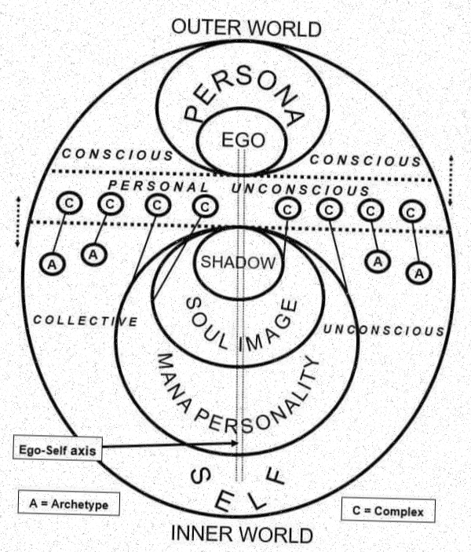

What is a Tulpa?
Spawning from lamaist doctrine, the concept derives from the composite faith between classical Buddhist teachings with the indigenous beliefs within Mongolia and Tibet. According to Encyclopedia.com, “Lamaism developed into a theistic religion with many gods and demons, and an elaborate ritual with spells, incantations, and prayer formulas.” [1].
The word for “tulpa” derives from the Tibetan word of “sprula” [2]. Tulpas are the manifestation of thoughts becoming life and gaining independent consciousness, a pseudo sub-type under the greater umbrella term of “Thoughtforms”. A thoughtform, defined by Oxford Languages is “(especially in Christian theology) a combination of presuppositions, imagery, and vocabulary current at a particular time or place and forming the context for thinking on a subject” [3].
For example, the phrase “breaking bread” leads most to visualize Leonardo da Vinci's famous mural “The Last Supper” which was painted in 1495-1498 and kept in the refectory of the Convent of Santa Maria delle Grazie in Milan, Italy [4]. Phycologics point this phenomenon towards collective consciousness [5], however they do not consider that they might just be peering into the reflection of a tulpa as tulpas can become, and already are, more than human bodies. Tulpas may take refuge in/manifest as inanimate objects, supernatural beings, land masses, concepts, sounds, etc.
|

THE SIX LEVELS of Higher Consciousness: How to Make the Shift July 01, 2021 Anima Mundi Herbals BY MARY O’MALLEY
|
The Psychosphere

There are various interpretations of the human psyche, an example is Carl Jung's model above. The psychosphere itself is a relatively new term, and refers to the grander collective consciousness that connects every conscious being, and is the “realm” of the beings that are inhabitants to tulpas. Referring back to the image, it is the “outer world" of the human psyche. Spiritualists and some scientists alike collectively agree that sleep is a window into this outer space, the psychosphere, as the human consciousness is lost from the flesh- and reunites with the swallowing tides of the higher consciousness. [6]
Carl Gustav Jung was born in the North of Switzerland, and by the age of 30 was established as a leading figure in the field of psychiatry. He was close friends with Sigmund Freud, but his extremely well known- as well as radical- view of psychoanalytic theory was what tore them apart. This parting inspired his theory of consciousness and unconsciousness, as well as the self. [7]
A quote from Jung within the Society of Analytical Psychology “'By psyche I understand the totality of all psychic processes, conscious as well as unconscious', (CW6 para 797) so we use the term 'psyche' rather than 'mind', since mind is used in common parlance to refer to the aspects of mental functioning which are conscious. Jung maintained that the psyche is a self-regulating system (like the body). The psyche strives to maintain a balance between opposing qualities while at the same time actively seeking its own development or as he called it, individuation. For Jung, the psyche is inherently separable into component parts with complexes and archetypal contents personified and functioning autonomously as complete secondary selves, not just as drives and processes. It is important to think of Jung's model as a metaphor not as concrete reality, or as something which is not subject to change” [8] as the human mind is far too primal to fully comprehend this.
“Dan Siegel, defines 'Mind' as ;an embodied and relational emergent process that regulates the flow of energy and information'. Siegel contends that 'as long as we define self as a singular noun, the planet is cooked'” [9].
Siegel's view upon the self echoes from the layers of self that Jung advocated for; simply stating that the self being the intersection of unconsciousness, consciousness (and ergo, qualia), thoughts, and the flesh.
Qualia, is the phenomenon that personal experiences can't be described through human language, no matter how advanced it may become [10]. It is more accurately a bodily sensation or perspective experience whose measurement isn't contained within the world of physical information.
An example of this, is the experience of seeing the color red. You would personally know when you are looking at the color red, however there would be no way to verbalize the sensation of staring at the color besides “it's red”. The same way a friend directly next to you wouldn't be able to know if their red was the same as your red. The two of you are staring at something you collectively agree is red, however neither of you can truly know if they are truly looking at the same thing. This goes by another name, aka solipsism; a “philosophical theory asserting that only one's own mind is sure to exist, leading to the view that knowledge beyond one's consciousness is impossible” [11]. Theories of solipsism root themselves from the ancient world, and have endured to the modern age due to its constant impact upon history and the modern day, despite many philosophers continuing to debate its truth and existence.
With this understanding, I employ a metaphor to further explain tulpas. Consider this: there is a screening of a movie, your movie. The film reel itself holds every moment, action, though, and emotion you will and have felt in every frame upon its plastic roll. However, what is truly you? The film? Incorrect. You, as the consciousness, are the light. The light will pretend to be the film it shines upon, creating the self: complete with ego, persona, and flesh. You are an observer, tricked into pretending to be the image you project. The light is not solely a part of the theater, it is merely one beam in the general understanding of light.
|
Jeremiah 29:10-14
This is what the Lord says: “When seventy years are completed for Babylon, I will come to you and fulfill my good promise to bring you back to this place. For I know the plans I have for you,” declares the Lord, “plans to prosper you and not to harm you, plans to give you hope and a future. Then you will call on me and come and pray to me, and I will listen to you. You will seek me and find me when you seek me with all your heart. I will be found by you,” declares the Lord, “and will bring you back from captivity. I will gather you from all the nations and places where I have banished you,” declares the Lord, “and will bring you back to the place from which I carried you into exile.”
|
The History of Tulpamancy
Tulpas come from the total concentration of mind, and are commonly created by a Bodhisattva: a person who has a high degree of spiritual perfection in which they sit directly below the Buddha, as the common mind is not a suitable vessel.
Originating from Acharya Asanga [12], who was an “influential Indian Buddhist monk and philosopher who lived during the 4th and 5th centuries CE. Renowned for his profound erudition, he co-founded the Yogācāra School of Buddhism alongside his guru Maitreyanātha and his half-brother Vasubandhu. This form of Mahāyāna Buddhism focuses on the nature of consciousness and the importance of compassion. Legend suggests that Asanga's early life was marked by deep meditation and a quest for enlightenment, during which he faced significant challenges, including a twelve-year retreat in a mountain cave.” [13] Tibetan Buddhism evolved from Mahāyāna Buddhism, which is why this practice has been translated between religions, although Tibetan is generally classified as Mahāyāna. Despite this generalization, Tibetan has a greater focus upon mantras rather than the Mahāyāna Buddhism focus on “its teachings that emphasize ideas such as that the true nature of all things is emptiness and that every single thing is dependent on everything else” [14].
Bodhisattva is not the ultimate goal of Tibetan Buddhism, narniva is, however Bodhisattva are those who are a step removed from enlightenment in order to help the suffering of others along the same path.
The tulpa itself is made of thousands of words and thoughts, which itself can create and take upon multiple forms [2]. Not only human; but intimated objects such as grassy fields, buildings, images, songs, etc. The tulpa produces an atmospheric phenomena that quenches the thirst of attention, feeding its immortality. This usually manifests itself as a collection of hosts that feed one tulpa, due to this, its power is unmeasurable and almost uncontrollable. This should be taken as literal and symbolic, as a tulpa stands as the product between two worlds.
But a more popular interpretation of tulpas stems from the fear of man. David-Neel continues into the belief that tulpas have the ability to kill a person, if that said person believes it to be so. For “he who does not believe in demons would never be killed by them” [2]. Fear is a greater source of attention, as anxiety creates the mind to wonder faster, and panic creates mass panic when shared between word of mouth. Famous tulpas that have been created under the same conditions can be the Boogeyman, Krampus, and most cryptics.
Explained within a simpler terminology; the Bodhisattva creates the vessel, and a being from the Psychosphere comes to inhabit it. As the nature of tulpas cannot be controlled, so the beings that possess the tulpa are, as well, just as uncontrollable.
|

Chet Murie created DADA DOG at an unknown point in time, merely as a cartoon drawing of a dog, with no known deeper meaning. However, it was sometime later co-opted by racist, right-wing hate groups as a symbol of their beliefs.

Explorer Alexandra David-Neel, here pictured, not with a tulpa, but with her Sikkimese assistant (and later adopted son) reincarnate lama Aphur Yongden (1899-1955).
|
How to: Creating a Tulpa
Despite their chaotic nature, tulpas can be controlled. The energy used to create it will be echoed throughout the lifespan of the tulpa, seeing as it is another factor of attention to the tulpa.
Another thought exercise: a wind powered machine sits in an open field. When blown, it comes alive. When the wind stops, it stays dormant. It does not disappear, it merely waits for the next gust of wind. It needs thought to exist, and it will use your brain as its temporary playground. They are mental parasites, they need hosts.
This is how tulpas operate. However, it is preexisting tulpas that are difficult to control, as they have formed without plan. Rather than wheels, they are more like broken yo-yos, blowing in any direction without a fight.
I will now teach you how to create a tulpa, one you may control. One that can outlive its need for a host.
The vessel
A vessel must be created for the tulpa to live within. When an idea comes to form in one's mind, this is nothing but digging a shallow hole in the dirt of the psychosphere. This vessel may take any form, the most common- and easiest- is a character.
Imagine its face, body, voice, how this person's hair would flow, how his family mourns their death, how missed he will be when the storm blows over. As the soldiers approached the house, my mother's hands were only strong enough to nudge the door open; shaking. Before they spoke, she was already wailing. Fallen. All three of them. Bodies unable to be retrieved. We buried their things. Three stones lined side by side. “In loving memory.” A week later a fourth joined them. “Loving mother.”
The Consciousness
This hole in the psychosphere will be filled up, if you call out enough. Soon, a being will inhabit your vessel. They find it hard to resist when their name is plastered all over it. Your desired consciousness will latch onto it, and reshape itself to fit the criteria you have given it. Be wary, the being itself can influence your vessel- so stay strong. Any exterior references that you may unconsciously connect to your vessel will irrevocably become another host to your tulpa. This may be to the benifit or the destruction of your tulpa. However, waiting for a completely new psychosphere dweller to attach their consciousness into your tulpa takes a clear mind. dissociate from your flesh, and usher any other presence in the correct direction. Psychosphere dwellers are easily maniplulated. Meditate, use psychoactive hallucinogens, or find forms of hypnosis.
Another path, is to use a fairly unknown preexisting psychosphere consciousness, and reshape their identity. This is the method I used to fuel my research.
The Tulpa
Bring more strength to your tulpa, invite more hosts, set strict rules upon how to manifest it. With more hosts, the wind machine gets more power. Eventually the wind will push it off its axis, and it will be able to freely roll across a field like a true wheel.
To repeat; have a concept, create a vessel, wait for the psychosphere to respond, commit your tulpa to reality. In truth, reality is just as fluid as the flow of your thoughts. Nothing is truly “real”, and the concept of “real” itself is rooted in the belief that the material is eternal.
Congratulations. You have created your own tulpa. Share your creation, empower it. Let it live, and grow. Because it wishes to outgrow your flesh.
|
|